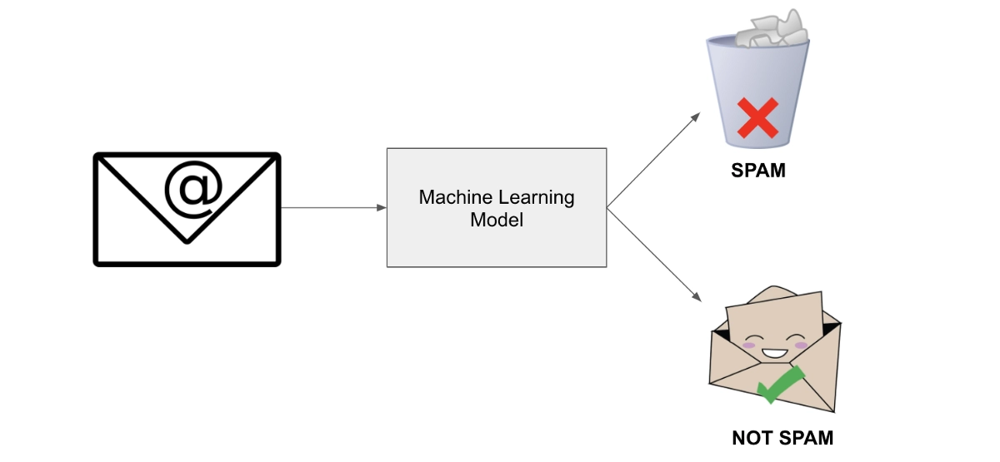
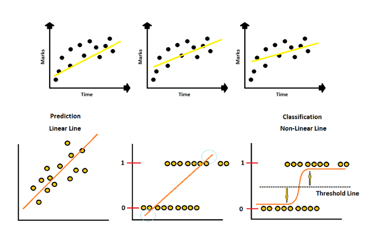
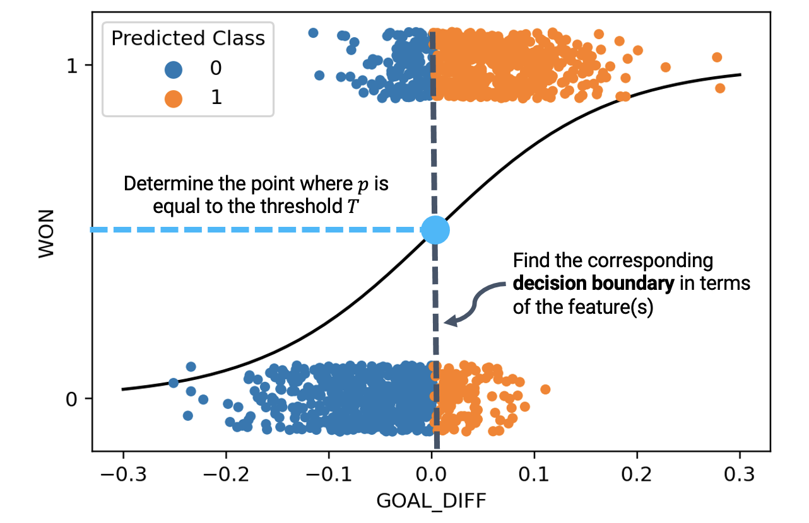
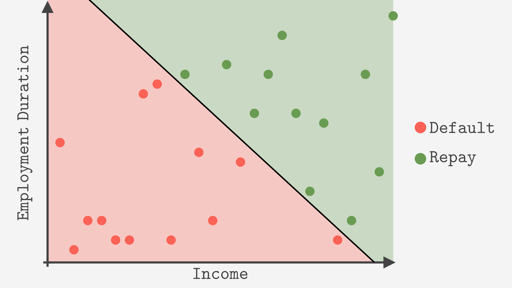
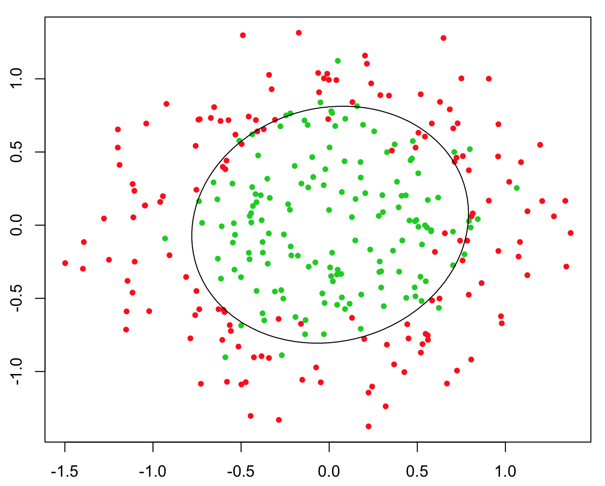
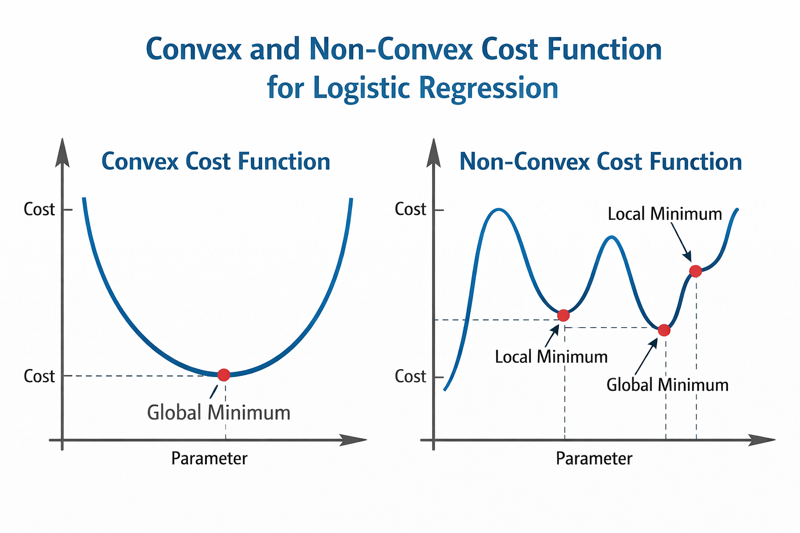
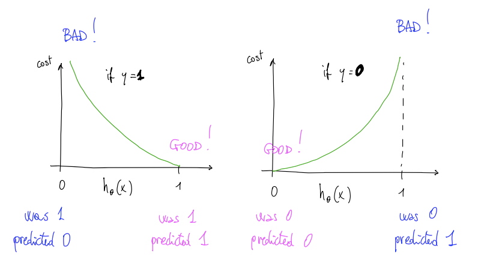

From Regression to Classification
So far, we have focused on predicting continuous values. But many real-world problems require predicting categories instead.
This type of problem is called classification.
| Problem Type | Example | Output |
|---|---|---|
| Regression | Predict house price | Continuous value |
| Classification | Spam or not spam | Discrete class (0 or 1) |
Binary Classification
The simplest form of classification is binary classification.
In binary classification, the output can take only two possible values:
- 0 → negative class
- 1 → positive class

Why Linear Regression Fails for Classification
At first, it may seem that we can use linear regression and then apply a threshold:
However, this approach has serious problems.
Problem
- Predictions can go below 0 or above 1
- Outliers can drastically change the decision boundary
Result
- Unstable predictions
- Poor classification performance

Towards Logistic Regression
To solve classification problems, we need a model that produces outputs between 0 and 1.
This output can be interpreted as a probability:
The sigmoid function transforms linear predictions into valid probabilities.
The Sigmoid Function
To model probabilities, we need a function that always outputs values between 0 and 1.
The sigmoid function transforms any real number into a value in the range [0, 1].
$$g(z) \to 0$$
$$g(z) = 0.5$$
$$g(z) \to 1$$
Logistic Regression Hypothesis
Logistic regression uses the sigmoid function applied to a linear combination of inputs.
We first compute a linear combination of features, then pass it through the sigmoid function to obtain a probability.
Interpreting the Output as a Probability
The output of logistic regression can be interpreted as a probability.
- If hθ(x) ≈ 1 → high probability of class 1
- If hθ(x) ≈ 0 → high probability of class 0
Making a Decision
To turn probabilities into predictions, we apply a threshold:
This threshold defines the decision boundary that separates the two classes.

Decision Boundary
The decision boundary is the line or surface that separates different classes.
It is defined by the set of points where the model is uncertain:
This boundary divides the input space into regions where the model predicts class 0 or class 1.

Linear Decision Boundaries
When we use only the original features, the decision boundary is a straight line.
This works well when the data can be separated linearly.
Good case
Data is roughly separable by a straight line
Bad case
Data has a curved or complex structure
Non-linear Decision Boundaries
By adding polynomial features, we can create non-linear decision boundaries.
For example, using features like x₁² and x₂² allows the model to create circular or curved boundaries.

Key Insight
The shape of the decision boundary depends on the features, not the algorithm.
Feature engineering and polynomial expansion are powerful tools for increasing model flexibility.
Why Not Use Squared Error?
In linear regression, we used squared error as a cost function. However, this does not work well for logistic regression.
When we apply squared error to logistic regression, the cost function becomes non-convex.

Logistic Regression Cost Function
Instead of squared error, logistic regression uses a different cost function designed for classification.
For a single training example:
Understanding the Cost Function

- h(x) → 1 → cost ≈ 0 ✅
- h(x) → 0 → cost → ∞ ❌
- h(x) → 0 → cost ≈ 0 ✅
- h(x) → 1 → cost → ∞ ❌
The model is rewarded when predictions are correct and confident, and strongly penalized when they are confidently wrong.
Unified Cost Function
The two cases can be combined into a single expression:
This compact formula works for both y = 0 and y = 1.
Cost Function for All Examples
For the entire dataset, we average over all training examples:
Gradient Descent for Logistic Regression
Logistic regression is trained using gradient descent, just like linear regression.
The update rule looks the same:
The key difference is the cost function. Instead of squared error, we now use the logistic cost function.
Because the cost function is convex, gradient descent will converge to a global minimum.
Putting Everything Together
Despite their differences, linear and logistic regression follow the same core idea.
| Component | Linear Regression | Logistic Regression |
|---|---|---|
| Output | Continuous value | Probability (0–1) |
| Hypothesis | θᵀx | g(θᵀx) |
| Cost Function | Squared error | Log loss |
| Task | Regression | Classification |
Choosing the Right Approach
Now that we have explored both regression and classification models, we can decide which approach to use depending on the problem.
The choice depends on the type of output, the complexity of the data, and the size of the feature space.
| Situation | Recommended Approach | Why |
|---|---|---|
| Predict continuous values | Linear Regression | Outputs real-valued predictions |
| Predict categories (0 or 1) | Logistic Regression | Models probabilities between 0 and 1 |
| Curved or complex patterns | Polynomial Features | Allows linear models to capture non-linear relationships |
| Many features (large n) | Gradient Descent | Scales well with large datasets |
| Small feature set | Normal Equation | Provides a direct solution without iteration |
| Slow or unstable training | Feature Scaling + Normalization | Improves convergence speed and stability |
Lecture Wrap-up
This part introduced the foundations of classification through logistic regression.
- Classification predicts categories rather than continuous values
- The sigmoid function maps outputs into probabilities
- Decision boundaries separate classes in feature space
- Feature transformations allow non-linear boundaries
- The logistic cost function replaces squared error
- Gradient descent still works, but with a different cost
Study Material
Use the slide deck for the transition from regression to classification, sigmoid intuition, and logistic cost derivation.
View PDF →Use the transcript for the lecturer’s explanation of probability interpretation, decision boundaries, and why squared error fails.
View PDF →Review Quiz
1. What is the main difference between regression and classification?
Regression predicts continuous values, while classification predicts categories or labels.
2. What is binary classification?
A classification problem with two possible outputs, usually 0 and 1.
3. Why is linear regression a poor choice for classification?
Because its outputs are not naturally restricted to the range [0,1] and the resulting decision boundary can be unstable.
4. What does the sigmoid function do?
It maps any real-valued input to a number between 0 and 1.
5. What is the formula of the sigmoid function?
$$g(z) = \frac{1}{1 + e^{-z}}$$
6. What does hθ(x) represent in logistic regression?
The probability that y = 1 given x.
7. What is the standard decision rule in logistic regression?
If hθ(x) ≥ 0.5 predict 1, otherwise predict 0.
8. What is a decision boundary?
The boundary in feature space that separates the predicted classes.
9. How can a model produce non-linear decision boundaries?
By adding transformed or polynomial features.
10. Why not use squared error for logistic regression?
Because it can produce a non-convex cost function that is harder to optimize reliably.
11. What does the logistic cost function penalize the most?
Confident but wrong predictions.
12. What happens to the cost when a prediction is correct and confident?
The cost becomes very small, close to zero.
13. What is the unified logistic cost for one example?
$$-y \log(h_\theta(x)) - (1 - y)\log(1 - h_\theta(x))$$
14. Does gradient descent still apply to logistic regression?
Yes. The update structure is the same, but the cost function is different.
15. What is the key difference between linear and logistic regression?
Linear regression predicts continuous values, while logistic regression predicts probabilities for classification.